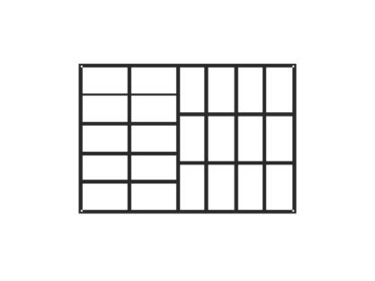

Giuseppe has a sheet of plywood, measuring $22 \times 15$. Giuseppe wants to cut out as many rectangular blocks of size $3 times 5$ as possible. How should he do it?
Pay attention, more than 22 such blocks can not be obtained. Why?
First of all, we note that Giuseppe can not get more than $(22 \times 15) / (3 \times 5)$ = 22 blocks. Now let's start cutting. Cut our sheet three times across the sides of which are of length 22, creating sections of size $5 \times 15$, $5 \times 15$ and $12 \times 15$. Now the third piece is cut along the side of length 12 into four equal pieces of size $3 \times 15$. This gives a total of 6 pieces - two $5 \times 15$ and four $3 \times 15$. From the first two pieces we can get 5 pieces of size $5 \times 3$, and from the remaining four - 3 pieces of size $3 \times 5$. In total, we get 22 pieces $($see the picture$)$.
